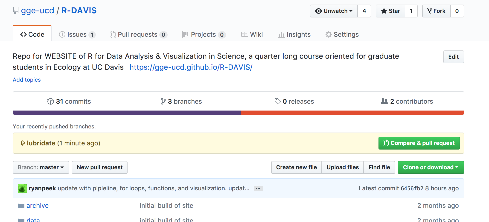
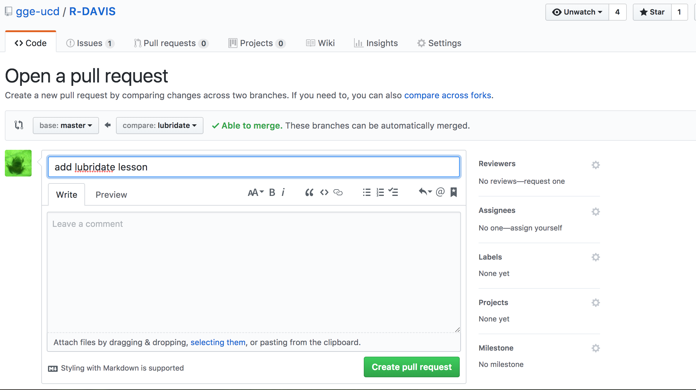
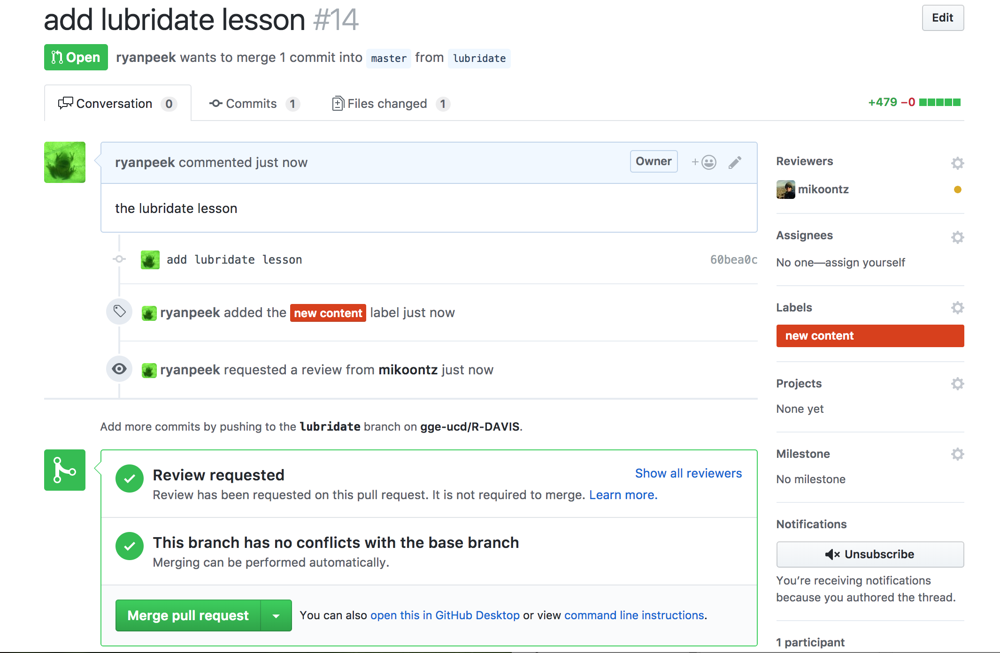

This is a quick tutorial in how to use branches in github, in addition to Pull requests, which is a way to create new content, review it, and then merge it back to your master content (the master branch). This is something that might take a bit of practice initially, but the process is and important “best practice” for collaboration and version control.
Ideally you only want to do one thing per branch that you work on…whether that’s fixing some code in a specific script, or adding new content (but only a single piece), the simpler you can keep what you add to a new branch, the easier it will be to track, and merge back into the master branch.
Make sure you’re on the master branch, and then either create a new branch via github, or in the command line use:
git checkout -b YOUR-NEW-BRANCHOnce that’s done, you can make your changes and update your content as needed. Once done, add one or more files (typically focus on adding one Rmd or lesson per branch). Perhaps most important is only adding the files you are working on or that you have revised (so don’t use git add . -A). Rather use:
git add lesson_on_something_cool.Rmdgit add data/data_for_something_cool.rdagit add img/some_imgs_for_something_cool.pngNow comes time to commit your changes. Add a message that is detailed but not too long.
git commit -m "add something_cool lesson"When you want to push, make sure you are on the branch with your content, add the branch to the upstream master:
git branch --set-upstream-to=origin/master viz_dosThen push your changes.
git push origin YOUR-NEW-BRANCHAt this point you’ve pushed changes up to the master (on github). If you got to the repo, there should be a green button with the option to “Compare & Pull Request”

The next screen gives you an opportunity to request a review, and tag your pull request (or PR) with some useful metadata.

After entering relevant info, you can create your pull request. Github will automatically check and see if the content can be merged without any conflicts (i.e., if there is a file by the same name, or content that might be overwritten on the master, it will let you know). If everything looks like it will merge cleanly, github will show a green checkmark saying “This branch has no conflicts with the base branch”. That means once the content is reviewed, all one needs to do is click the Merge pull request button, and the changes will automagically get added into the master branch.

master BranchThen you wait for whomever you tagged to review your content and Merge pull request. Once content has been successfully merged, you’ll be able to delete the branch (locally and on github).
To delete the local branch (the one on your computer), you can use:
git branch -d the_local_branchYou can do this on Github.com, or via command line with:
git push origin --delete the_remote_branchThis lesson was contributed by Ryan Peek.